Logical Operators
Each if statement uses a logical operator to decide if something is true or false. The result determines whether to run the block of code or skip it
This is a list of the most common logical operators
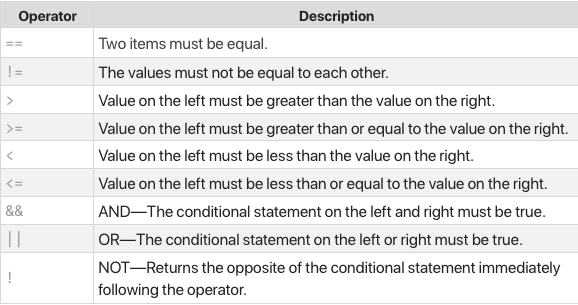Boolean values are either true or false and can be combined with an if statement to determine if a code should be run or skipped
If Statements
The most straight forward conditional statement is the if statement. An if statement basically says "if this condition is true, then run this block of code." If the condition isn't true, the program will skip the block of code.
In most cases, you'll use a if statement to check simple conditions with only a few possible outcomes
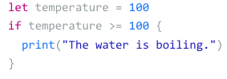The outcome would be...
Because the temperature is 100 and the if statement says that if the temperature is 100 or over, then it would print "The water is boiling."
If-Else Statements
An if statement will run a block of code if the condition is true, but if the condition is not true you can add an else clause to an if statement, so you can specify a block of code to execute if the condition is not true
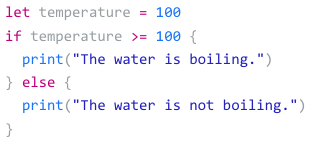You can use any else if statements to account for any number of potential cases
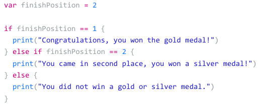Boolean Values
You can assign the results of a logical operator to a Bool constant or variable in order to check or access the value later. Bool values can only be true or false
In the following code, the Bool statement determines that the number doesn't qualify as "issmallnumber":
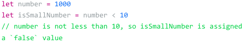And here, the bool statment determines that "currentSpeed" does qualify as "isSpeeding"
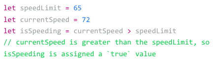It's also possible to invert a Bool value using the logical NOT operator which is represented with !
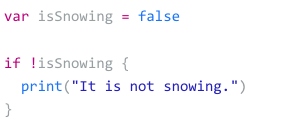Console output:
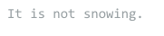You can use logical AND operator, represented by &&, to check if 2 or more conditions are true
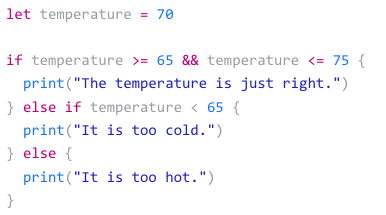The console will output:
The logical OR operator, represented by ||, to check if either one of two condtitions is true
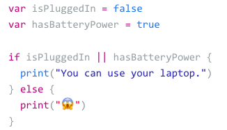This will result in saying "You can use your laptop." because it has battery power, and only one of the two need to be true
Switch Statement
Since a long chain of if-else statemnts may get messy and hard to read, so to make matters more efficient Swift has a control flow called a switch statement
A basic switch statement takes a value with multiple options and allows you to run seperate code based on each option, or case. You can also provide a default case to specify a block of code that will run in all the cases you haven't specifically defined.
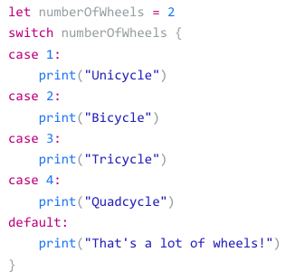This code provides a seperate action if the value is 1,2,3 or 4. It also provides an action if numberOfWheels is anything else.
If this was written as an if-else statement, it would become diffcult to understand
A case statement can also evaluate multiple conditions at once:
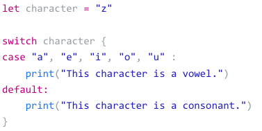When working with numbers you can use interval matching to check for inclusion in a range
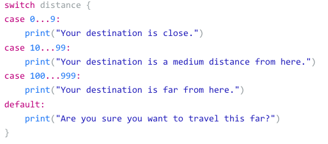The switch operator is the right tool for control flow when you want to run different code based on many different conditions
Ternary Operator
An interesting (and very common) use case for an if statement is to set a variable or return a value. If a certain condition is true, you want to set a variable to one value. If the condition is false, you want to set the variable to a different value.
The following block of code checks if the value of one number is greater than the other and assigns the higher value to a largest variable
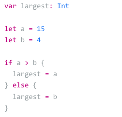Because this situation is so common in programming, many languages include a special operator, called a ternary operator (?:), for writing more concise code

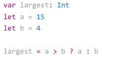
Translation: If "a" is greater than "b", assign "a" to the largest constant, otherwise assign "b".
In this case "a" is greater than "b", so it's assigned to largest.
You are not required to use this, but it is more efficient than performing a more complex if-else statement.